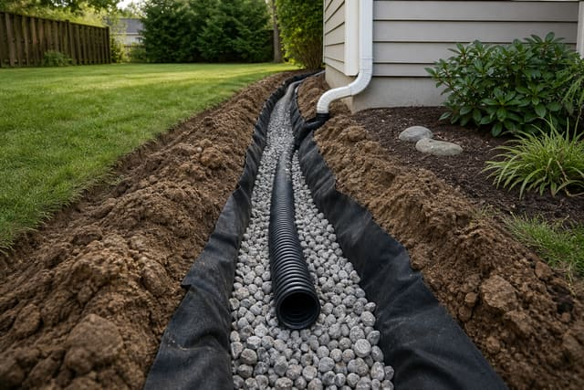
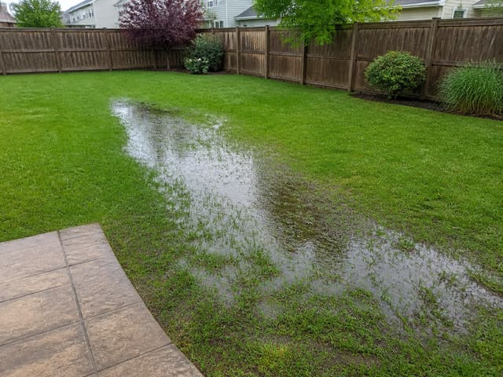
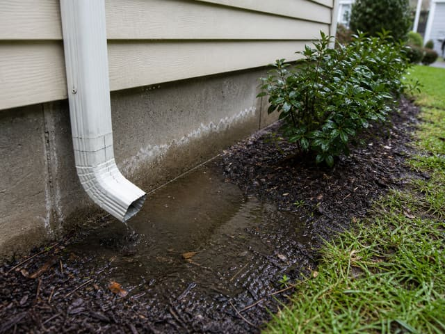

Dallas Drain Guys is an all in-house team of licensed & insured drainage specialists based in Dallas, Texas. No subcontractors, no shortcuts — just permanent fixes for Texas clay and heavy storms.

Most drainage failures aren’t bad luck — they’re undersized pipe, wrong fall, or no real diagnosis. We start every job with a slope check and, when needed, a camera inspection. Then we build a system that moves water to the right discharge — sized for the lot, not just the puddle you can see.
We're based in Dallas and work across the full DFW metroplex — 24 cities from Highland Park to Fort Worth, Frisco to Mansfield. Every install is photo-documented before backfill and covered by a written workmanship guarantee.
Licensed & insured, background-checked crews. We respect your home and your time — clean job sites, clear arrival windows.
On-time, communicative, and tidy. Sod put back, grade restored, and a walk-through before we leave.
Camera before we dig. Proper stone, fabric, and fall — no cheap pipe or daylight dumps in the wrong spot.
Written estimate fast. Scheduling within days, not weeks. If flow isn't right, we come back.
DFW clay, slope and storm load — we size every system for what Texas actually does, not what a catalog says.
Line-item written estimate, no hidden fees. You approve it before we touch a shovel.
Our own drainage crews do every install — that's how we keep quality consistent from estimate to backfill.
Licensed, insured drainage pros — every home walked by a lead before backfill.

On-site assessment, camera when needed, and a line-item plan you approve.

Photo-documented, proper discharge, and a written workmanship guarantee.
Every system is covered by a workmanship guarantee — if flow isn't right, we come back and make it right. Your estimate details what's covered.
Whether it's yard pooling, foundation seepage, or storm pipe — tell us where water sits and we'll map a fix.